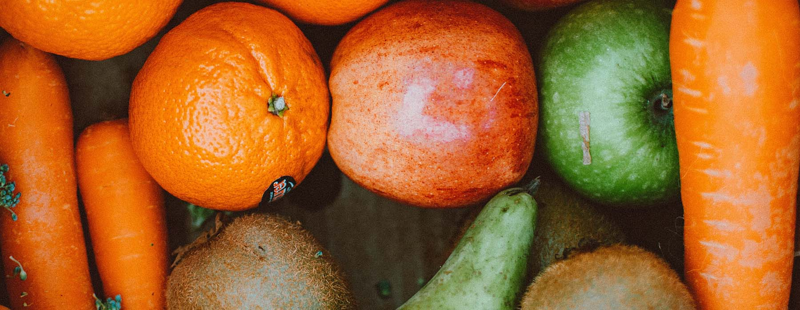

Sådan fungerer det
Opskrifter
Om os
Klimavenlige mad opskrifter
Disse opskrifter er den nemmeste og mest velsmagende vej til en bæredygtig fremtid

Tre gode råd hvis du vil have mere klimavenlige madvaner
Spis mere grønt - og følg sæsonerne
Spis mindre kød – og vælg lyst kød frem for mørkt kød
Undgå madspild